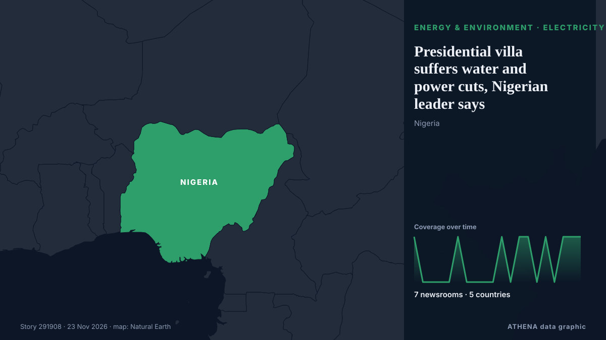

Energy, Resources & Environment
SponsoredPresented by  Cybernetics and Artificial Intelligence Lab Welcome to the Cybernetics and Artificial Intelligence Laboratory, established at the Department of Business Administration of the National and Kapodistrian University of Athens. The lab is headed by Professor Dimitrios Thomakos. The lab aims to do research that can be published in top venues. Our research uses tools and methods of Artificial Intelligence, and lies in the following areas: - Forecasting - Decision making - Cyber security - Finance We are always looking forward to collaborating with exceptional students!
Cybernetics and Artificial Intelligence Lab Welcome to the Cybernetics and Artificial Intelligence Laboratory, established at the Department of Business Administration of the National and Kapodistrian University of Athens. The lab is headed by Professor Dimitrios Thomakos. The lab aims to do research that can be published in top venues. Our research uses tools and methods of Artificial Intelligence, and lies in the following areas: - Forecasting - Decision making - Cyber security - Finance We are always looking forward to collaborating with exceptional students!

Electricity & powerPresidential villa suffers water and power cuts, Nigerian leader says
Bola Tinubu says he was shaving last week when the water cut out - an experience familiar to many Nigerians. from BBC News
| 10 Nov | 110 |
|---|---|
| 11 Nov | 117 |
| 12 Nov | 90 |
| 13 Nov | 74 |
| 14 Nov | 42 |
| 15 Nov | 51 |
| 16 Nov | 109 |
| 17 Nov | 87 |
| 18 Nov | 84 |
| 19 Nov | 78 |
| 20 Nov | 50 |
| 21 Nov | 38 |
| 22 Nov | 41 |
| 23 Nov | 24 |
UN Climate Talks End Without Major Deal
COP31 negotiations collapse after deep divisions over fossil fuels and climate finance, leaving key climate commitments unresolved. from News of Bahrain
Britain digging new reservoirs to fight persistent droughts
Havant Thicket Reservoir will be the first to enter service in England since 1992. from The Straits Times
HMM signs green shipping deal with Nextpower
South Korean shipping company HMM said Monday it had signed a deal allowing US solar technology company Nextpower to reflect emissions reductions from HMM’s use of lower-carbon marine fuels in its… from Korea Herald
Climate talks collapse in chaotic end to COP31
Civil society groups from Bangladesh, Bhutan and Nepal call for predictable, grant-based adaptation funding. from The Business Standard (Bangladesh) (working feed)
As headlines fade, Nepal’s flood survivors are still rebuilding
Months after deadly floods and landslides struck, a Malaysian relief team found families and schools still grappling with the quieter, everyday work of starting again. from Free Malaysia Today
PM Wong to visit Australia from Nov. 23-25, meet Australian PM Albanese
PM Wong will fly to Australia on Singapore Airlines' inaugural flight to Western Sydney International Airport. from Mothership
COP31 flop triggers backlash in Australia; Pacific nations express despair
Turkey hosted the latest talks, called COP31, in Antalya but shared leadership with Australia. from The Straits Times
LR approves new Rules for nuclear-powered ships and offshore units
The Class Rules are suitable for all ship- and offshore unit- types, are technology agnostic and set the goals and functional requirements for integrating nuclear power with maritime. from Ports Europe
Bad COP, worse COP: What’s next after climate talks fail?
The collapse of marathon climate talks in Turkey has renewed questions about reform of their consensus requirement, and galvanised calls for legal action and ambitious side agreements between… from Al-Monitor
'The town is gone': Brazil storm death toll rises to 5
Rain and high winds battered Tupancireta early Friday, tearing up buildings and about 100 trees in the municipality that is home to 20,000 people. from Channels TV
Libya’s Oil Output Plunges as Armed Groups Shut Key Pipelines
Libya’s oil production has crashed by about 350,000 barrels per day (bpd) after an outlaw group closed a valve on the pipeline transporting crude oil from Sharara, the country’s biggest oilfield, the… from OilPrice.com
Saudi Arabia's influence loomed large over failed COP31 deal
Saudi Arabia and fellow Opec members have long opposed climate language targeting fossil fuels, saying they must remain part of the global energy mix. from Free Malaysia Today
Drone attack reported on Kaleykino oil pumping station in Russia's Tatarstan
Residents of Almetyevsk in Russia's Tatarstan region recorded flashes near the village of Kaleykino, where an oil pumping station of the Russian trunk oil pipeline system of the same name is located. from Ukrinform (English)
Villarreal say Pepe's eye surgery not linked to watching solar eclipse
Former Arsenal forward Nicolas Pepe returned to action wearing a protective mask after being out for two weeks following an operation. from Free Malaysia Today
Korea asks Qatar to prioritize LNG supplies once production, shipping normalize
Industry Minister Kim Jung-kwan on Monday requested that Qatar give priority to supplying liquefied natural gas (LNG) to Korea when Qatari LNG production and navigation through the Strait of Hormuz… from The Korea Times
Rain, Storms and Strong Winds Kick Off Week
Rain and thunderstorms are expected across western and northern regions and parts of the Aegean, while southerly winds could reach 8 on the Beaufort scale and temperatures climb to 24 C. from To Vima (English)
EU officials reject Cop31 deal as it 'doesn't speak to reality of the climate crisis' – video
The Cop31 climate talks fell into disarray as the EU, UK and allies in the developing world rejected what they called an unacceptable deal on the future of the climate. from Guardian Environment
Around 50 settlements in Rivne Oblast left without power following Russian attack
A Russian strike on the Sarny district in Ukraine's west disrupted the electricity supply to dozens of settlements, while repeated air-raid warning are hampering repair work. from Ukrainska Pravda (English)
EU objects to Cop31 draft deal over failure to mention fossil fuels
Bangladeshi climate advocates welcome key proposals but warn that delivery will depend on public grants, clear timelines and firm obligations for developed countries. from The Business Standard (Bangladesh) (working feed)
Russian attacks cause power outages in five Ukrainian oblasts
As of the morning of 22 November, consumers in Odesa, Dnipropetrovsk, Zhytomyr, Rivne and Kharkiv oblasts remain without electricity after Russian strikes damaged energy facilities, forcing Odesa… from Ukrainska Pravda (English)
At SCO forum in New Delhi, Musadik Malik terms climate change a 'threat' to civilisation
Minister for Climate Change and Environmental Coordination Dr Musadik Malik addresses Shanghai Cooperation Organisation Civilisational Dialogue Forum in New Delhi, India, November 21, 2026.… from Geo News (English)
Pacific climate demands face resistance at COP31
COP31 negotiations have entered a critical second week after Australia’s Minister for Climate Change and Energy, Chris Bowen, presented the first draft of a presidency-led cover decision, setting out… from Post-Courier (PNG)
Russia strikes gas service facility in Dnipropetrovsk region with guided bomb, several injured
Russian forces attacked a gas service facility in the Dnipropetrovsk region with an aerial bomb on Sunday, November 22. from Ukrinform (English)
COP31 climate talks on the brink as new draft deal faces scrutiny
New draft would acknowledge for the first time that global warming is on course to pass the 1.5C threshold. from Al Jazeera English
Fossil Fuels Missing In New COP31 Draft Deal, Tensions Remain Unresolved
Fossil fuels are a flashpoint at the climate talks and the summit comes against a difficult backdrop of soaring energy prices and geopolitical tensions stemming from the war in Iran. from NDTV World
Heavy rain on way for parts of UK
The alert will be in effect for parts of the South West from 6am and remain in place the entire day. from Evening Standard (London)
COP31 climate deal in the balance after fractious talks
Ten years after the Paris Agreement took effect, its durability faces another test. from Khmer Times
Magnitude 4.5 earthquake strikes 20km north-east of Hanmer Springs
GeoNet had received 186 felt reports by 9.25pm, including one reporting extreme shaking and another reporting strong shaking. from Stuff
Port of Los Angeles Releases Environmental Impact Draft for Proposed Terminal Improvements
The Port of Los Angeles has released a Draft Environmental Impact Report (DEIR) for a proposed Marine Oil Terminal and Wharf Improvements Project, located at Berths 148-151 in Wilmington… from Maritime Professional
6.7 magnitude earthquake hits central Peru
LIMA, Peru (AFP)—A 6.7-magnitude earthquake struck central Peru on Friday, the Peruvian Geophysical Institute reported, with a preliminary report indicating no fatalities or serious damage from the… from Jamaica Observer
What US mining firm plans to do before mining Kenya’s Ksh8T Mrima Hill minerals
The US-led consortium selected by the Kenyan government to negotiate prospecting rights for the Mrima Hill rare earth and niobium deposits has unveiled a 36-month programme outlining what it plans to… from People Daily
Court stay prevents US Army from detonating bomb-making chemicals in Iowa
DES MOINES, Iowa (AP) — A federal appeals court has granted a request by environmentalists to put on hold a permit that cleared the way for the U.S. from The Canadian Press (via CityNews)
Iraq reopens key road linking Jurf al-Nasr to Karbala
Road reopens a day after Iraqi forces begin redeployment in Jurf al-Nasr amid security measures and investigations into suspected oil smuggling. from Anadolu Agency (English)
Countries race to secure COP31 deal after fossil fuel row
The COP31 climate talks have extended into Saturday as nations struggle to agree on a deal following the removal of fossil fuel references from draft texts, highlighting significant disagreements. from Arab News